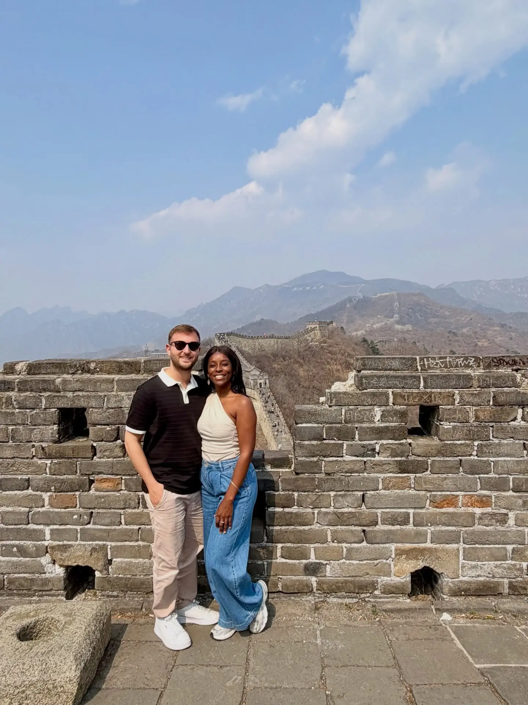
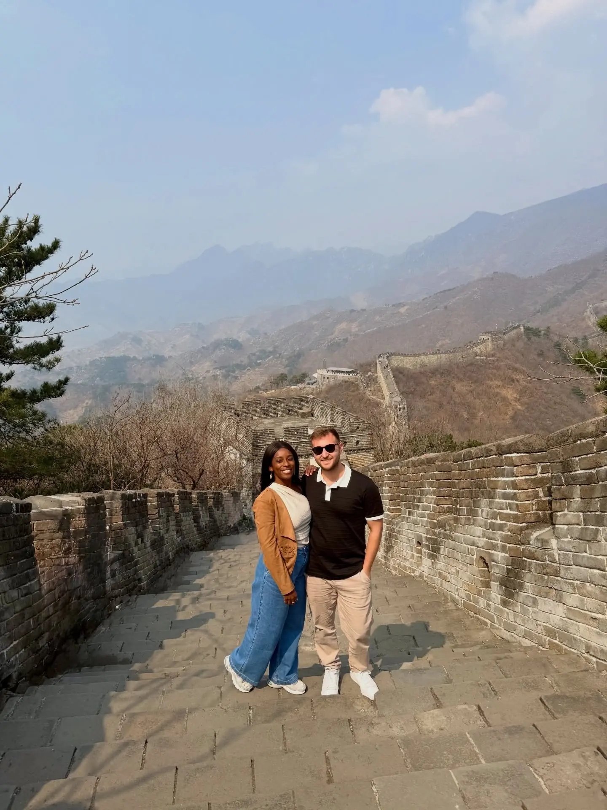

Spot 01 · Our #1 highlight01
The Great Wall at Mutianyu
📍 Mutianyu Great Wall · ~1.5 hrs north of central Beijing
This was the moment of the whole trip for us. We chose Mutianyu over Badaling and were so glad we did — it's restored, dramatic, and far less crowded, with a cable car up and a toboggan ride back down. Our biggest tip: go with a tour group that handles the drive out to the wall. It's a long way from the city and public transport is a hassle; letting a tour sort the transfer (and often lunch) made the whole day effortless. Give yourself a few hours up top — we could've stayed all day.
Book a tour for transportMutianyu > BadalingCable car + toboggan
GetYourGuide
We booked this